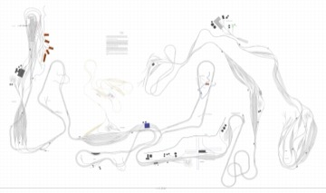
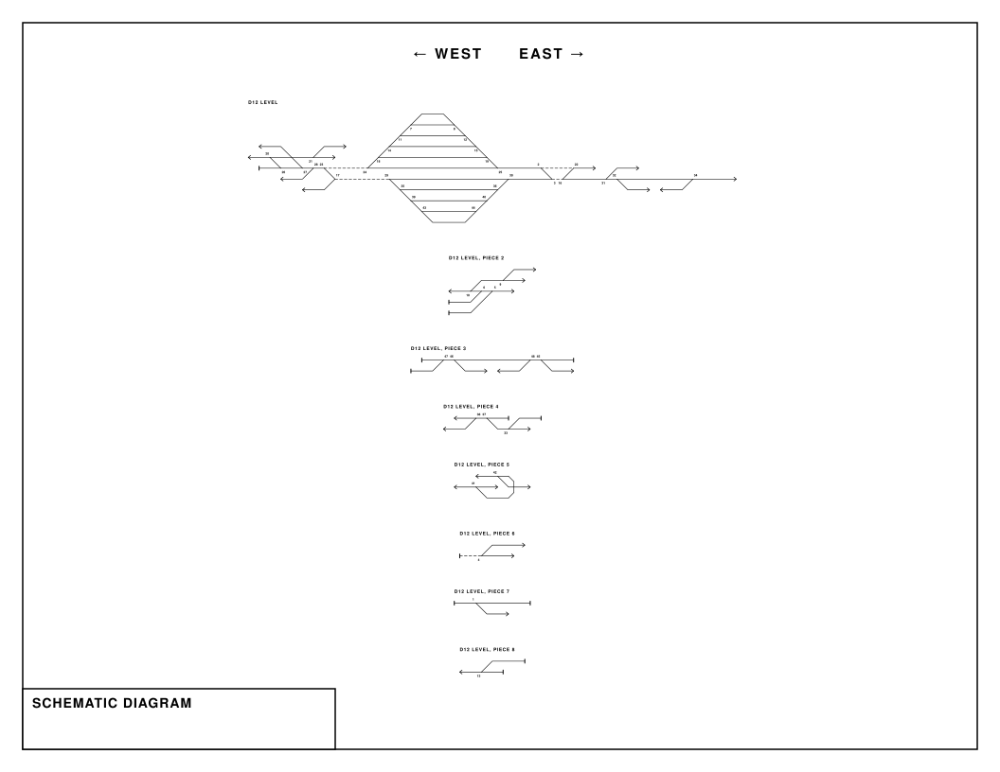

The Schematic-Maps Plugin
A free plugin that reads a track plan and draws a schematic sheet, a JMRI Layout Editor panel and a CATS dispatcher desk. It drew 37 of the 38 example layouts that AnyRail publishes.
The plugin takes a track plan and draws it three ways from one solve: a schematic sheet with a band for each level, a JMRI Layout Editor panel, and a CATS dispatcher desk. The plan can be an AnyRail plan exported as JMRI XML, or an AnyRail .any file read directly.
Get it
The plugin is public and free, in the same repository as the other model-railroad plugins.
01What it does
The sheet has one band for each level, the main line level through every switch, yard ladders stepped diagonally, loops, helix tracks, lettered connectors where a track climbs between levels, and signal masts. Switch numbers and track names are placed so that nothing overlaps, and the command checks the finished sheet for crossing lines and overlapping labels.
The Layout Editor panel and the CATS desk come from the same solved drawing, so the three agree on the order of tracks and on every switch. It runs as a Python command, schematic, that uses only the standard library, and draws the same sheet from the same input on every machine.
The only input it needs is the plan. Preferences (titles, band order, lengths chosen for looks) and hints are optional, and the sheet is correct without them. A skill tells the agent the order of the work. Install it in Claude Code with claude plugin install schematic-maps@model-railroad-skills.
02The test on AnyRail's examples
DRail Software, the maker of AnyRail, publishes 38 example layouts at anyrail.com/examples. Each was exported from AnyRail as JMRI XML and drawn by plugin version 0.1.53 with no hints and no preferences, so each sheet is the plan's own track, read as it is.
- 37 of 38 draw. D6 (1105 switches) ran out of its 900 s limit and has no sheet.
- Times run from under a second to about 14 minutes. The longest drawn is D18, 144 switches, at 833 s.
- Lighter search. A band with 100 or more switches, or 20 or more independent loops, gets a lighter search, which the run logs. The gallery marks the four layouts where it was used (D10, D11, D17 and D24).
- Faults are places where two tracks cross or lie on top of each other on the sheet. Label faults are labels that found no clear spot. Both counts are under each pair of pictures below.
The runs were made on a Mac, three plans at a time, with a 600 s limit and 900 s for the last three. The results page on GitHub has the table and every sheet.
03Credits
These layouts are other people's work
- The layouts are the work of their designers, published by DRail Software, the maker of AnyRail, on its examples page.
- Each title and designer below is as AnyRail gives it. "Not credited" means the page names no one.
- The left picture of each pair is AnyRail's drawing of the plan, exported from AnyRail with the plan.
- The right picture is the plugin's sheet.
- The plan files are not published.
04All 38 layouts
AnyRail's drawing is on the left and the plugin's sheet on the right. Each picture opens full size; AnyRail's drawings are kept at 360 px wide. Sheets are vector files and zoom in.


Designer: Russ Haigh
3 switches · 0.2 s · 0 faults · label faults 0 of 7


Designer: Russ Haigh
8 switches · 0.3 s · 0 faults · label faults 0 of 13


Designer: not credited
22 switches · 3.6 s · 3 faults · label faults 0 of 26


Designer: not credited
31 switches · 2.5 s · 0 faults · label faults 0 of 35


Designer: Peter
15 switches · 0.2 s · 0 faults · label faults 0 of 25


Designer: Jeff Partridge
1105 switches. No sheet: ran out of the 900 s limit.


Designer: Bill Coxe
52 switches · 230 s · 1 fault · label faults 0 of 57


Designer: Bert de Vries
23 switches · 1.9 s · 0 faults · label faults 0 of 27


Designer: Dave Gann
21 switches · 3.1 s · 0 faults · label faults 0 of 25


Designer: Marc Shaw
139 switches · 265 s · 12 faults · label faults 8 of 145 · lighter search


Designer: Eric Consemulder
105 switches · 22 s · 19 faults · label faults 7 of 121 · lighter search


Designer: Zoltán Rigó
48 switches · 3.8 s · 1 fault · label faults 6 of 59


Designer: Andy Hutcheon
40 switches · 313 s · 5 faults · label faults 0 of 45


Designer: Michael Carver
22 switches · 2.4 s · 0 faults · label faults 0 of 31


Designer: Rob Boone
26 switches · 0.5 s · 0 faults · label faults 0 of 37


Designer: Peter Hanenberg
28 switches · 1.8 s · 0 faults · label faults 0 of 32


Designer: Alain Lissoir
164 switches · 578 s · 24 faults · label faults 25 of 172 · lighter search


Designer: Merv Hourigan
144 switches · 833 s · 2 faults · label faults 11 of 167


Designer: John MacDonald
24 switches · 8.7 s · 0 faults · label faults 0 of 29


Designer: Rien de Koning
13 switches · 2.1 s · 1 fault · label faults 0 of 18


Designer: Jack Biermans
20 switches · 5.6 s · 4 faults · label faults 0 of 24


Designer: Ray DeWeese
32 switches · 1.3 s · 0 faults · label faults 2 of 45


Designer: Isaac Fabris
15 switches · 0.4 s · 0 faults · label faults 0 of 19


Designer: Isaac Fabris
65 switches · 63 s · 11 faults · label faults 0 of 69 · lighter search


Designer: Mike Malley
54 switches · 0.6 s · 0 faults · label faults 3 of 73


Designer: Russ Haigh
29 switches · 3.7 s · 0 faults · label faults 0 of 35


Designer: not credited
50 switches · 9.7 s · 1 fault · label faults 0 of 56


Designer: Martin de Widt
42 switches · 2.0 s · 0 faults · label faults 0 of 50


Designer: Peter
7 switches · 0.3 s · 0 faults · label faults 0 of 12


Designer: not credited
12 switches · 0.4 s · 0 faults · label faults 0 of 16


Designer: Ray DeWeese
24 switches · 12 s · 1 fault · label faults 0 of 31


Designer: Russ Haigh
19 switches · 0.3 s · 0 faults · label faults 0 of 26


Designer: Chaz
3 switches · 0.3 s · 0 faults · label faults 0 of 7


Designer: Christian
92 switches · 573 s · 3 faults · label faults 15 of 103


Designer: Rich Erickson
10 switches · 0.8 s · 2 faults · label faults 0 of 15


Designer: Herman
22 switches · 0.4 s · 0 faults · label faults 0 of 30


Designer: Chris Manvell
40 switches · 46 s · 6 faults · label faults 0 of 45


Designer: Chaz
69 switches · 49 s · 8 faults · label faults 1 of 75
NotesReferences
- The schematic-maps plugin (GitHub). github.com/lnevo/model-railroad-skills
- Results on AnyRail's example layouts, with credits and every sheet (GitHub). plugins/schematic-maps/docs/anyrail-examples
- AnyRail example layouts, DRail Software. anyrail.com/examples
More: The Car Cards Plugin · The Operations Pro Plugin · Behind the Scenes